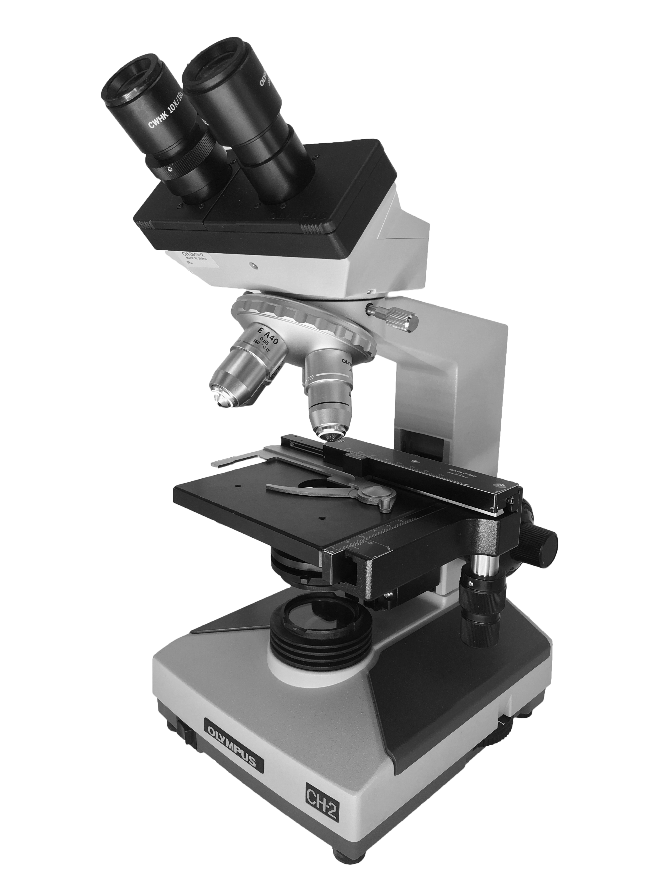
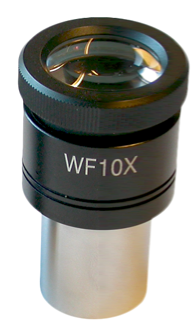
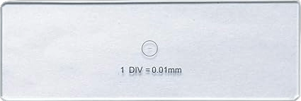

 

General Instructions
Click on slide to move it under the microscope
Click on stirer to stir the solution
Click on beaker to get some sample solution over the slide
To move the slide under the microscope just click on it
Microscope View Instructions
To open the microscope view, click on microscope image
To align eye piece micrometer with stage micrometer you can use arrow keys
To exit out of the microscope view press "Esc" key on keyboard